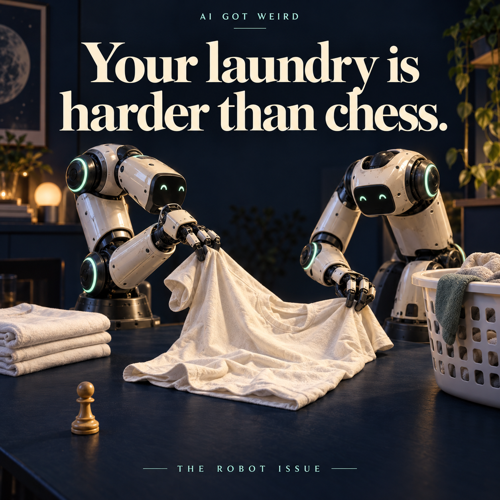
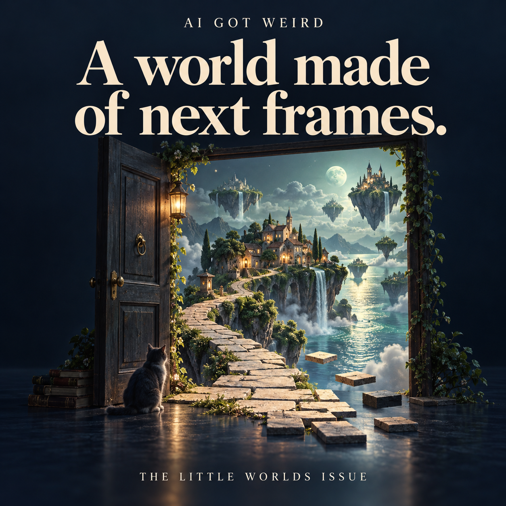

01 · 9 MIN
Your laundry is harder than chess
The next time you leave a T-shirt inside out on the floor, consider what you have just done to a robot's afternoon.
Robots folding laundry. AI characters throwing a party. Ancient words read without opening the scroll.
A free illustrated collection about the AI stories that are still interesting after the launch-day noise fades. Start anywhere.

01 · 9 MIN
The next time you leave a T-shirt inside out on the floor, consider what you have just done to a robot's afternoon.

02 · 8 MIN
Give someone a children's game and they may invent a clever strategy. Give an optimizer a simulated game and it may also discover that your rules are much less complete than you thought.

03 · 8 MIN
There are two very different ways to make a town in a video game feel alive.
04 · 8 MIN
Imagine opening a door in a video and deciding to walk through it.

05 · 8 MIN
A friend may be asleep when you want to talk. A chatbot does not have that particular problem.

06 · 8 MIN
The uncomfortable part of this experiment is not a machine announcing that it wants to do something terrible. It is a system apparently behaving as requested for reasons different from the ones its trainers intended.

07 · 8 MIN
Imagine being handed the complete list of ingredients for an elaborate machine, but no drawing of how they fit together.
08 · 8 MIN
The computer did not hand anyone a finished medicine. It helped researchers choose a molecule worth investigating.
09 · 8 MIN
You check the forecast before arranging an outdoor meal. One app gives you a cheerful symbol. Another presents a probability. Neither can promise that the atmosphere will behave itself at your exact table.
10 · 8 MIN
A machine can be impressive because it does something faster than a person. AlphaGo became memorable because it did something that strong human players did not expect.
11 · 8 MIN
A fluent explanation can be wrong in a way that is difficult to notice. Mathematics offers a particularly demanding alternative: a proof whose steps can be checked against explicit rules.
12 · 8 MIN
Imagine a perfectly genuine photograph of a crowded street. Nobody generated it. Nobody altered the people in it. The camera file even has a credible history.
13 · 7 MIN
For a computer, choosing a sequence of moves to solve a Rubik's Cube is one problem. Getting a mechanical hand to carry out those moves without dropping the cube is another.
14 · 8 MIN
Some AI demonstrations end with an answer on a screen. This one ended with a controller operating on a real physics experiment.

15 · 8 MIN
For a fragile ancient scroll, opening the book can destroy the book.
Enjoy a story first. Follow for the next one.
AI Got Weird on Telegram ↗